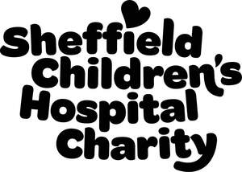
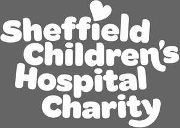

Trade Mark Journal No.2025/026 27 June 2025
UK00004204179 15 May 2025 (5,16,18,24,25,28,36,42,44)
Mark 1

Mark 2
Mark 3

The following is in regards to the 3rd mark in the series: The colour grey represents transparent background areas only and is not part of the trade mark.
- Class 5
- Pharmaceutical and veterinary preparations; sanitary preparations for medical purposes; dietetic food and substances adapted for medical or veterinary use; food for babies; dietary supplements for humans and animals; plasters; materials for dressings; material for stopping teeth; dental wax; disinfectants; preparations for destroying vermin; fungicides; herbicides; absorbent cotton; adhesive plasters; sticking plasters; adhesive tapes for medical purposes; adhesive bands for medical purposes; antiseptic cotton; aseptic cotton; bandages for dressings; compresses; cotton for medical purposes; cotton swabs for medical purposes; cotton sticks for medical purposes; dressings, medical; eyepatches for medical purposes; first-aid boxes, filled; gauze for dressings; paper for mustard plaster; sterilising preparations; surgical dressings; wadding for medical purposes; parts and fittings for all the aforesaid.
- Class 16
- Paper; cardboard; printed matter; bookbinding material; photographs; stationery; adhesives for stationery or household purposes; artists' materials; paint brushes; typewriters and office requisites (except furniture); instructional and teaching material (except apparatus); plastic materials for packaging (not included in other classes); printers' type; printing blocks; address stamps; adhesive tape dispensers [office requisites]; adhesive tapes for stationery or household purposes; adhesive bands for stationery or household purposes; adhesives [glues] for stationery or household purposes; advertisement boards of paper or cardboard; albums; scrapbooks; almanacs; announcement cards [stationery]; bags of paper or plastics; envelopes of paper or plastics; pouches of paper or plastics; bibs of paper; bookends; booklets; bookmarks; bookmarkers; books; bottle envelopes of cardboard or paper; bottle wrappers of cardboard or paper; boxes of cardboard or paper; business cards; calendars; cardboard tubes; cash receipt books; catalogues; charcoal pencils; coasters of paper; comic books; covers [stationery]; wrappers [stationery]; desk mats; document files [stationery]; document holders [stationery]; drawing pads; drawing materials; drawing instruments; drawing sets; drawing pens; drawing rulers; envelopes [stationery]; files [office requisites]; flags of paper; flyers; folders for papers; jackets for papers; folders [stationery]; forms, printed; fountain pens; glue for stationery or household purposes; greeting cards; gummed tape [stationery]; holders for cheque books; index cards [stationery]; labels, not of textile; loose-leaf binders; letter trays; letterheads; letterhead paper; magazines [periodicals]; manifolds [stationery]; manuals; handbooks; marking pens [stationery]; modelling clay; modelling materials; money clips; musical greeting cards; newsletters; newspapers; note books; pads [stationery]; paint boxes; paint trays; paintbrushes; painters' easels; paintings [pictures], framed or unframed; palettes for painters; pamphlets; paper sheets [stationery]; paper clasps; paper tapes and cards for the recordal of computer programmes; paper bows; paper-clips; paperweights; passport holders; pen clips; pen cases; boxes for pens; pencils; penholders; pens; periodicals; photographs [printed]; pictures; placards of paper or cardboard; place mats of paper; plastic film for wrapping; portraits; postcards; posters; printed publications; prospectuses; school supplies [stationery]; self-adhesive tapes for stationery or household purposes; signboards of paper or cardboard; stands for pens and pencils; stencil cases; stencil plates; stencils [stationery]; stencils; stickers [stationery]; table linen of paper; table napkins of paper; tablecloths of paper; tablemats of paper; tags for index cards; teaching materials [except apparatus]; tickets; tracing paper; transfers [decalcomanias]; decalcomanias; wrapping paper; packing paper; wristbands for the retention of writing instruments; writing slates; writing or drawing books; writing materials; writing paper; writing cases [stationery]; writing cases [sets]; writing brushes; writing instruments; informational leaflets; car stickers; corporate window stickers; embrace stickers; money box stickers; paper banners; PVC banners; compliment slips; sponsorship forms; receipt books; freepost envelopes; gift aid envelopes; colouring books; paper wristbands; temporary tattoos; paper cake decorations; parts and fitting for all the aforesaid.
- Class 18
- Leather and imitations of leather; animal skins, hides; trunks and travelling bags; umbrellas and parasols; walking sticks; whips, harness and saddler; attaché cases; bags for climbers; bags for campers; bags of leather, for packaging; envelopes, of leather, for packaging; pouches, of leather, for packaging; bags for sports; beach bags; boxes of leather or leather board; briefcases; business card cases; canes; walking sticks; card cases [notecases]; cases, of leather or leatherboard; casings, of leather; credit card cases; wallets; garment bags for travel; handbags; hat boxes of leather; key cases; net bags for shopping; parasols; pocket wallets; purses; rucksacks; backpacks; school bags; school satchels; shopping bags; suitcases; travelling trunks; travelling bags; travelling sets [leatherware]; trunks [luggage]; umbrella rings; umbrella or parasol ribs; umbrella sticks; umbrella covers; umbrella handles; umbrellas; valises; valves of leather; vanity cases, not fitted; walking stick seats; walking stick handles; walking cane handles; wheeled shopping bags; canvas bags; parts and fitting for all the aforesaid.
- Class 24
- Textiles and textile goods, not included in other classes; bed covers; table covers; banners; fabrics; coverings for furniture; labels; linens; bed covers; table covers; bath linen, except clothing; bed blankets; bed clothes; bed covers of paper; bed linen; billiard cloth; bolting cloth; brocades; buckram; bunting; calico; canvas for tapestry or embroidery; cheese cloth; chenille fabric; cheviots; cloth; coasters; cotton fabrics; covers for cushions; fabrics for textile use; household linen; lining fabric for shoes; linings; loose covers for furniture; mattress covers; napkins, of cloth, for removing make-up; net curtains; non-woven textile fabrics; sanitary flannel; serviettes of textile; sheets; shower curtains of textile or plastic; shrouds; silk; silk fabrics for printing patterns; table linen, not of paper; table runners; tablecloths, not of paper; tablemats, not of paper; textile material; towels of textile; traced cloth for embroidery; travelling rugs; tulle; upholstery fabrics; velvet; wall hangings of textile; washing mitts; woollen cloth; zephyr; textiles for making clothing; duvets; duvet covers; pillow covers; bath linen; bed canopies; curtains; blankets; bed blankets made of cotton; bed blankets made of wool; bed blankets made of man-made fibres; blankets for babies; cot blankets; lap blankets; children's blankets; travel blankets; blankets for use in pushchairs, strollers and prams; towel blankets; hooded towels; hooded towels for babies; face towels; children's towels; sleeping bags for babies; pillowcases; pillow cover and protectors; PVC banners; parts and fittings for all the aforesaid.
- Class 25
- Clothing; footwear; headgear; aprons; bandanas; neckerchiefs; bath sandals; bath slippers; bath robes; bathing caps; bathing trunks; bathing drawers; bathing suits; swimsuits; beach clothes; beach shoes; belts; bibs, not of paper; boas; boots; boots for sports; camisoles; caps; clothing for gymnastics; clothing of leather; coats; collars; corsets; cuffs; wristbands; cyclists' clothing; detachable collars; dress shields; dresses; dressing gowns; ear muffs; fishing vests; football shoes; football boots; footmuffs, not electrically heated; gloves; gymnastic shoes; hats; headbands; heelpieces for stockings; heelpieces for footwear; heels; hoods; jackets; jerseys; jumper dresses; pinafore dresses; knitwear; layettes; leggings; leg warmers; mittens; money belts [clothing]; muffs; neck scarves; mufflers; neckties; non-slipping devices for footwear; outerclothing; overalls; smocks; overcoats; topcoats; paper clothing; paper hats; parkas; petticoats; pockets for clothing; ponchos; pyjamas; ready-made clothing; sandals; saris; sarongs; sashes for wear; scarves; scarfs; shawls; shirt fronts; shirt yokes; shirts; shoes; short-sleeve shirts; shower caps; ski boots; ski gloves; skirts; sleep masks; slippers; socks; sports jerseys; sports shoes; sweaters; jumpers; pullovers; teddies; tee-shirts; top hats; trousers; uniforms; veils [clothing]; visors [headwear]; waistcoats; vests; waterproof clothing; wimples; running vests.
- Class 28
- Games and playthings; gymnastic and sporting articles not included in other classes; decorations for Christmas trees; bells for Christmas trees; board games; building blocks [toys]; building games; candle holders for Christmas trees; carnival masks; Christmas tree stands; confetti; counters for games; cups for dice; dice; dolls; dolls' feeding bottles; dolls' beds; dolls' houses; dolls' clothes; dolls' rooms; dominoes; draughtboards; checkerboards; flying discs [toys]; gloves for games; jigsaw puzzles; masks [playthings]; mobiles [toys]; ornaments for Christmas trees, except illumination articles and confectionery; paper party hats; piñatas; play balloons; playing balloons; playing cards; plush toys; puppets; marionettes; rattles [playthings]; ring games; rocking horses; sleds [sports articles]; slides [playthings]; snow globes; soap bubbles [toys]; spinning tops [toys]; stuffed toys; swimming pools [play articles]; swimming belts; swimming jackets; swings; teddy bears; toy models; toy figures; toys for domestic pets; trampolines; twirling batons; water wings; parts and fitting for all the aforesaid.
- Class 36
- Insurance; financial affairs; monetary affairs; real estate affairs; charitable fund raising; charitable collections; organising of charitable collections; fund raising for charitable purposes; arranging charitable collections; charitable services, namely financial services; benevolent fund services; financial sponsorship; information and advice in relation to the aforesaid services.
- Class 42
- Scientific and technological services and research and design relating thereto; industrial analysis and research services; design and development of computer hardware and software; medical research; medical research services; biological research, clinical research and medical research; medical and pharmacological research service; scientific investigations for medical purposes; scientific research for medical purposes in the area of cancerous diseases; providing medical and scientific research information in the field of pharmaceuticals and clinical trials; charitable services, namely medical research services; creating and maintaining websites; design and development of homepages and websites; information and advice in relation to the aforesaid services.
- Class 44
- Medical services; veterinary services; hygienic and beauty care for human beings or animals; agriculture, horticulture and forestry services; alternative medicine services; aquaculture services; aromatherapy services; blood bank services; chiropractics; dentistry; health care; health spa services; health centres; health counselling; hospices; hospitals; massage; medical clinic services; medical assistance; medical equipment rental; medical advice for individuals with disabilities; midwife services; nursing homes; nursing, medical; opticians' services; orthodontic services; pharmacists' services to make up prescriptions; pharmacy advice; physiotherapy; physical therapy; plastic surgery; services of a psychologist; rehabilitation for substance abuse patients; sanatoriums; speech therapy services; telemedicine services; therapy services; charitable services, namely provision of medical services; information and advice in relation to the aforesaid services.
The Children’s Hospital Charity
Representative: Dehns